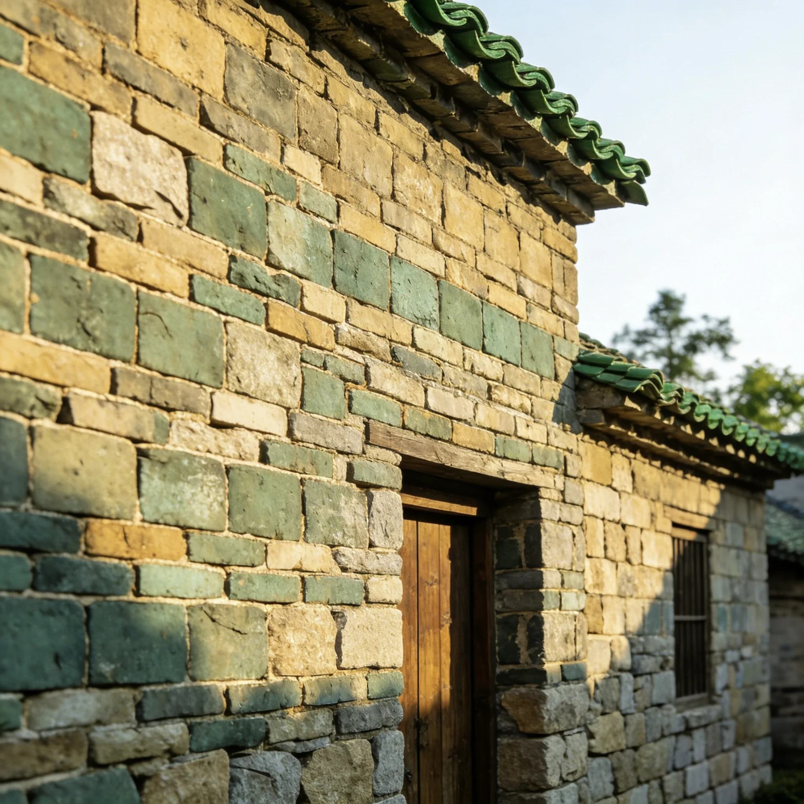
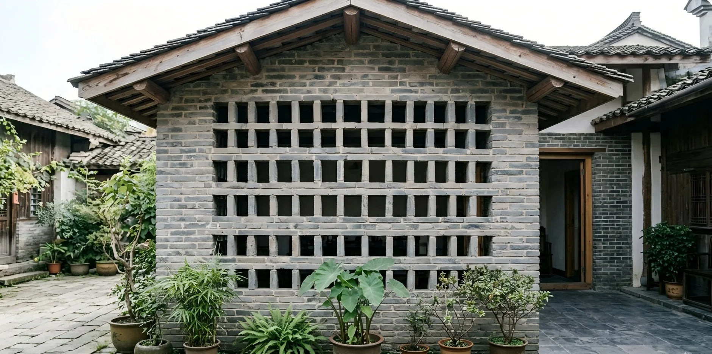
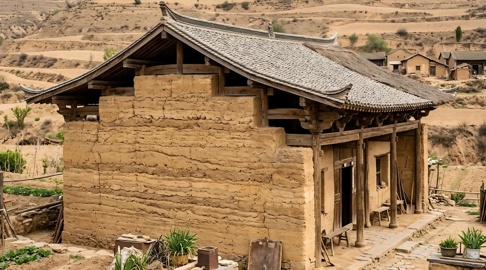
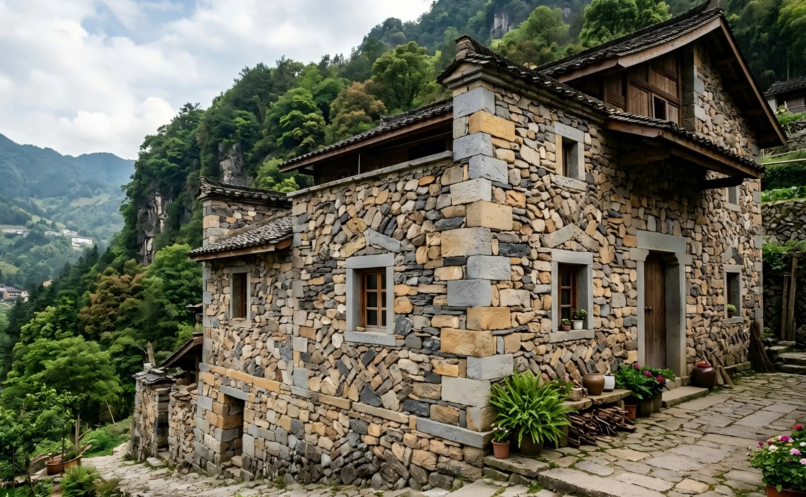
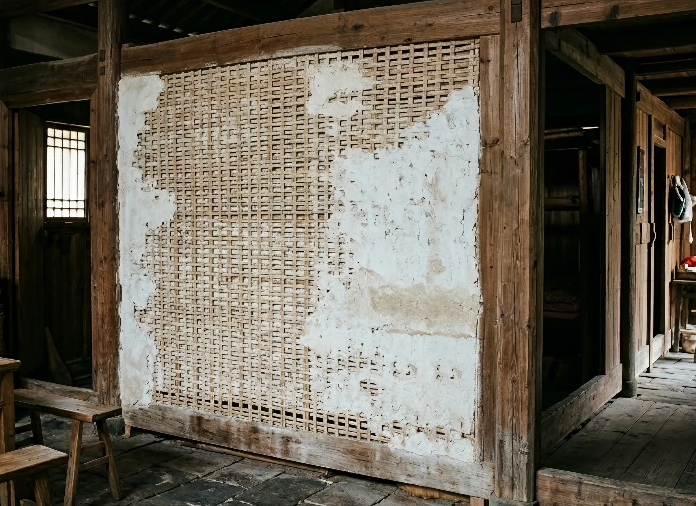
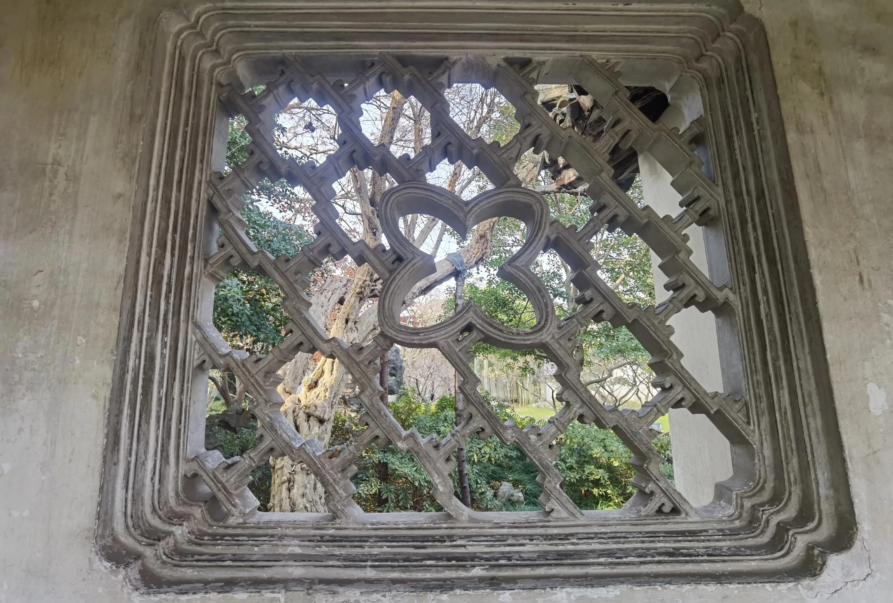

抬梁式构架
以粗壮的梁柱为主要承重体系，柱子上承大梁，梁上再叠短梁，层层抬升托起檩条。整体构架开间开阔、空间规整，梁架厚重稳固，承重与抗风性能强，结构庄重大气，是北方官式与民居的主流木构架。
北京四合院、晋派大院木构架。
以粗壮的梁柱为主要承重体系，柱子上承大梁，梁上再叠短梁，层层抬升托起檩条。整体构架开间开阔、空间规整，梁架厚重稳固，承重与抗风性能强，结构庄重大气，是北方官式与民居的主流木构架。
北京四合院、晋派大院木构架。
以密集立柱直接承托檩条，柱间用穿枋串联拉结，不依赖大型主梁。构架用料纤细、整体轻巧，整体性好、抗震能力突出，施工灵活省料，非常适合南方多雨潮湿、多风地震的环境。
江南民居、川派吊脚楼、徽派民居木构架。
采用木柱、木梁承担屋顶重量，外墙与隔断则用夯土或青砖砌筑围护。结构因地制宜、造价经济，墙体厚实保温，既能节省木材，又能提升稳定性，广泛用于干旱与山地地区。
西北窑洞、华北乡村民居、西南山地民居。

整栋房屋以木柱高架架空，底层悬空不住人，上层作为居住空间。架空结构能有效通风防潮、防虫蛇野兽，适应高温多雨、地势低洼的环境，是湿热地区典型的民居形式。
西南吊脚楼、傣族竹楼、闽粤山区民居。
以烧制青砖为原料，满浆满缝紧密砌筑，砖块咬合规整。质地坚硬密实、强度高，兼具承重与围护功能，防水耐用，质感温润。
代表：晋派大院高墙、北京四合院外墙、客家土楼外围墙。


青砖采用空心构造砌筑，内部形成中空腔体。省料轻便，隔热隔音效果好，不承担承重，仅作为围护或隔断墙使用。
代表：苏派民居、皖派民居外墙、江南小院隔墙。
生土掺入稻草等分层夯实而成，墙体厚实紧实。保温隔热性突出，冬暖夏凉，取材方便、造价低廉，兼具承重与防护功能。
代表：福建土楼内墙、西北窑洞墙体、西南山地民居墙。


选用天然石材砌筑，石块相互嵌合。硬度高、耐风化、抗侵蚀，结构稳固，常用于基础和外围墙，外观质朴厚重。
代表：福建石构民居、川滇山地民居、潮汕沿海民居墙。
竹篾编织成骨架，内外涂抹泥浆或石灰浆。轻便透气、韧性好，施工简单成本低，不承重，多作为内墙或隔断。
代表：西南吊脚楼、江南农家、傣族竹楼内墙墙体结构部分。

结构简介：古建筑木构架中最主要的竖向支撑构件，贯穿建筑上下，形成整体竖向骨架。
性质作用：受压构件，承受梁架与屋顶传来的荷载，并将力传递至柱础与台基。
应用部位：檐下、室内、山墙及转角处，是所有木构建筑必备的基础构件。

结构简介：架设在柱与柱之间的水平承重构件，是屋架体系的核心受力部件。
性质作用：受弯构件，承托檩条及屋面重量，将荷载传递到立柱，决定建筑跨度。
应用部位：柱顶之间，沿建筑进深方向布置，构成屋架主体。


结构简介：梁身呈弧形微拱的特殊梁架形式，兼具结构受力与装饰效果。
性质作用：受力性能更优，抗弯能力强，同时柔化梁架线条，提升美观度。
应用部位：厅堂、殿宇及民居室内梁架，是传统木构中常见的艺术化梁体。
结构简介：连接立柱的水平联系构件，用于加固柱网、增强构架整体性。
性质作用：主要起拉结稳定作用，提高框架刚度，防止柱架侧倾变形。
应用部位：柱头上方、柱身之间，沿面阔方向布置，为框架稳定构件。

结构简介：由斗、拱、昂组合而成的复合受力构件，是官式建筑标志性结构。
性质作用：过渡传力、挑出屋檐、分散荷载，同时具有较强的抗震缓冲作用。
应用部位：柱顶、额枋与屋檐之间，多用于宫殿、庙宇等高等级建筑。


结构简介：从柱身斜向伸出的悬挑支撑构件，多用于扩大屋檐出挑长度。
性质作用：斜向受压支撑，承担悬挑檐部荷载，防止屋檐下垂变形。
应用部位：檐柱外侧上端，常见于江南民居、徽派建筑及廊檐部位。
结构简介：架于梁上的横向承托构件，形成屋顶的主要支撑骨架。
性质作用：承托椽子，将屋面荷载均匀传递给梁架，固定椽位。
应用部位：梁架上方，沿建筑面阔方向平行布置。


结构简介：密排铺设在檩上的细长木构件，构成屋顶坡面基层。
性质作用：直接承托瓦面与望板，将屋面荷载传递至檩条。
应用部位：檩条之上，沿建筑进深方向密排铺设。
结构简介：立于梁上的短柱，用于支撑上层梁架或脊檩。
性质作用：竖向接力承重，抬升并传递上部荷载，形成多层梁架。
应用部位：各层梁架之上，脊部及金步位置均有使用。


结构简介：屋架内部的斜向支撑构件，用于稳定顶部檩条。
性质作用：约束脊檩与檩条位移，防止滚动，增强屋架几何稳定性。
应用部位：脊部两侧、梁与檩之间，为传统屋架重要稳定件。
结构简介：垫在立柱底部的石质构件，保护柱根并分散压力。
性质作用：分散柱底压力、防潮防腐，避免柱根下沉或腐朽。
应用部位：立柱下端与台基接触面。


结构简介：建筑底部的整体砖石基座，是建筑与地基之间的过渡结构。
性质作用：承托整体建筑荷载，均匀传至地基，同时防潮、防水。
应用部位：建筑最下部，为整座建筑的基础平台。
结构简介：木构件之间凹凸咬合的连接构造，是中国木构核心连接方式。
性质作用：传递剪力与弯矩，提升构架整体性与抗震性能。
应用部位：柱、梁、枋、斗拱等所有木构件节点。

山墙呈阶梯状层层叠落，随屋面高度分段抬高，轮廓错落起伏，墙头微微上翘。整体层次清晰，造型挺拔，既能有效阻隔火势蔓延，又具有极强的装饰性，是极具辨识度的传统山墙形式。
代表：徽派宏村、西递民居、江南部分民居山墙。


山墙顶部呈圆弧形隆起，形似锅耳，曲线饱满浑厚，两端向上收拢。墙体高大厚实，弧形顶部既增强了结构稳定性，又利于通风散热，整体庄重大气，装饰性与实用性兼备。
代表：岭南镬耳屋、潮汕民居、粤派围龙屋山墙。
山墙整体呈竖直平面，线条简洁笔直，与屋面齐平或略高于屋面。墙面平整规整，构造简单坚固，能有效包裹内部木构件，防风耐用，风格朴素沉稳。
代表：北京四合院、晋派大院、北方乡村民居山墙。


山墙整体为柔和的连续弧形，自上而下流畅弯曲，没有尖锐棱角。曲线舒缓自然，造型轻盈圆润，既美观又能分散受力，整体形态温婉而富有动感。
代表：川派民居、滇南民居、湘西少数民族民居山墙。
屋顶两侧山墙与屋面齐平，无出檐，结构简单、防风性好，南北方民居最常用。
代表：北京四合院、晋派民居、江南普通民居屋顶。
屋顶两侧出檐，山墙低于屋面，排水、遮阳效果好，南方民居更常见。
代表：苏派民居、川派吊脚楼、徽派小型民居屋顶。
屋顶无正脊，呈弧形，造型柔和，多用于民居厅堂、厢房，南方更普遍。
代表：江南民居厢房、岭南民居厅堂、部分徽派民居。
屋顶呈锥形，从四周向上汇聚至顶部宝顶，造型轻盈聚拢，结构精巧，多用于民居门楼、亭台楼阁。
代表：徽派民居门楼、闽派土楼附属亭台、江南园林亭子。
屋顶由前后左右四个坡面组成，上半段为两坡、下半段转为四坡，配一条正脊、四条垂脊与四条戗脊，层次丰富、兼具庄重与灵动，常见于民居宗祠、厅堂及园林主建筑。
代表：徽派宗祠享堂、闽派闽南大厝宗祠、江南园林主厅。
介绍：通过将房屋主体以密集立柱架空抬升，使居住层与地面完全脱离，形成通透的底层空间。底层空气流通顺畅，能有效隔绝地面潮气向上渗透，同时避免蛇虫鼠蚁侵扰，兼具实用性与适应性。
代表：西南吊脚楼、傣族竹楼、闽粤沿海民居


介绍：采用厚实的砖石或夯土砌筑墙体，搭配窄小的窗户设计。厚实墙体能阻挡外界冷热空气快速传导，起到优异的保温隔热效果，同时抵御冬季寒风与风沙侵袭；窄小窗户在保障室内采光的同时，增强了建筑的防御安全性。
代表：西北窑洞、晋派大院、北方乡村民居
介绍：以高大厚重的砖石围墙环绕宅院，墙体高达数米且坚固密实，部分还搭配瞭望孔、射击孔与碉楼等辅助设施。整体构造能有效阻挡外部盗匪入侵，同时保护宅院内部隐私与安全，兼具防护与威慑作用。
代表：福建土楼、晋派大院、客家围楼


介绍：在民居内部设置天井，天井地面特意设计平缓坡度，底部铺设砖石并预留隐蔽排水口，部分还搭配暗沟与庭院外河道相连。降雨时，雨水顺着屋顶坡面汇入天井，再通过坡度引导快速流入排水口排出，避免积水浸泡房屋基础。
代表：徽派民居、苏派民居、岭南天井民居
介绍：以高出屋面的马头墙、独立防火墙为核心，配合砖石砌筑的分隔墙体，将密集排布的民居划分为独立防火单元。当一处房屋失火时，高大的防火构造能阻挡火势向相邻建筑蔓延，有效减少火灾损失。
代表：徽派马头墙、江南民居防火墙、潮汕民居防火分隔

以中心院落为空间核心，建筑沿四周有序围合，整体呈现严格的中轴线对称格局。空间层次分明、秩序严谨，高度体现传统礼制与家族伦理观念。院落兼具采光、通风、活动与景观核心功能，布局规整大气，是我国北方地区最具代表性的民居形式。
代表：北京四合院、晋派大院、北方乡村合院、曲阜孔府前院
由房屋四面或三面围合形成尺度精巧的中心天井，空间布局紧凑集约。这一结构能高效化解南方湿热气候带来的困扰，通过天井实现自然采光与排水，让内部空间通透凉爽，实用性极强，成为江南及华南民居的主流模式。
代表：徽派民居、苏派民居、岭南民居、西关大屋、潮汕“四点金”
建筑以环形或弧形形态围绕中心庭院整体布置，形成封闭且内向的聚居空间。此类布局结构整体性强、防御性能突出，非常适合战乱环境下的大家族聚居。建筑强调内外有别与团结共生，是闽、粤客家地区极具地域特色的传统形制。
代表：福建土楼、粤派围龙屋、客家围楼、梅州四角楼、龙岩圆楼
顺应山地起伏的自然地形灵活布置，建筑随坡就势、高低错落，不刻意追求对称轴线。通过错层、悬挑与台地处理适应地形高差，既减少了土方开挖成本，又与自然环境相融共生，是山区地形最自然实用的布局方式。
代表：川派山地民居、滇派一颗印、湘西吊脚楼、羌族碉楼村寨、贵州石板房
依托黄土高原深厚土层条件，沿崖壁横向开挖或掘地成穴，建筑结构稳定且冬暖夏凉。布局多沿崖体成排分布或构成下沉式院落，内部拱券规整，外部顺势而为，几乎不占用平地耕地，是黄土高原独有的生态型民居布局。
代表：陕北靠崖窑、豫西地坑院、陇东窑洞、黄土高原崖居、山西土窑
以高木柱将建筑整体底层架空，上层作为主要居住空间，形成典型的“下空上住”结构。此布局能有效隔绝地面潮气与虫蛇侵扰，完美适配西南地区多雨湿热气候及坡地环境，空间轻盈通透，极具民族特色。
代表：傣族竹楼、桂北木楼、苗寨吊脚楼、侗族鼓楼民居、黎族船形屋
在单一合院基础上向纵向多进延伸、横向多路并联，形成规模宏大的建筑群组。内部主次分明、功能分区清晰，既满足大家族分支聚居的生活需求，又通过复杂的院落体系保持了传统秩序与礼制，是大型官宅与富商宅院的复杂布局典范。
代表：晋商大院（王家大院、乔家大院）、曲阜孔府民居、苏州拙政园住宅部分、扬州何园宅院群
建筑沿河道、水巷依水而建，形成“前街后河、依水筑屋”的独特格局。水路与街巷并行，既保障了交通便利，又赋予建筑灵动的滨水景观。建筑顺应水岸曲线自由排布，是江南水乡生活气息最浓厚的布局形式。
代表：江南水乡民居、乌镇古宅、周庄枕水建筑、同里临水民居、甪直水巷宅院
以石砌或夯土构筑高层坚固主体，平面方正紧凑。外墙厚实、开窗窄小，集居住与防御功能于一体。整体建筑高耸稳固，视野开阔，能有效抵御外部匪患与恶劣气候，是高原与侨乡地区特色鲜明的防御型民居布局。
代表：藏族碉房、广东开平碉楼、羌族石楼、川西碉房、福建土楼碉楼
建筑沿街道或河岸横向延展成线，多户并联、共用山墙，形成连续整齐的立面形态。户型多呈窄面宽、大进深的条状结构，常采用前店后宅、下店上宅的复合功能，既节约了用地成本，又利于沿街商贸往来。
代表：北方村镇沿街民居、徽州沿街店宅、广东竹筒屋、江南水巷连屋、平遥古城沿街商铺
材料筛选
全部大类同屏展示，若内容超出可在此区域拖动滚动；可用左侧三级折叠抽屉按功能、地域、社会属性分类筛选。
如鸟斯革，如翚斯飞
民居屋顶多为凹曲缓和坡面，不似西方平直硬顶。屋面从中部向檐口缓缓下弯、檐角轻扬，线条柔和流动，消解建筑厚重感，生出轻盈升腾的气韵。
北方民居（四合院、晋派）：屋面坡度平缓、弧度收敛，线条端正沉稳，大气质朴，适配北方大风、严寒气候，视觉庄重均衡。
江南苏浙、皖南民居：屋面陡缓相宜，檐部曲度舒展柔和，烟雨之下曲面层次朦胧，自带水墨写意美感。
闽南潮汕民居：屋面大曲大折，弧度奔放夸张，张力极强。
屋顶内凹抬檐，既利于远排雨水、保护木构墙身；又能收拢天光、采光匀和，做到实用形态与视觉韵律合一。


民间普通民居最主流的形式，仅有一层屋檐，结构简洁实用。屋面多为两坡或四坡简单坡面，线条干净利落、质朴稳重，不事张扬，契合民居低调内敛的营造理念，整体呈现出平和、舒展、贴近生活的美感。在视觉上追求简约克制的秩序，以少胜多，体现出朴素自然、含蓄温润的东方审美特质。

多见于大户宅院、宗祠、厅堂、门楼等重要建筑，在同一屋顶下设置两层或多层屋檐，屋脊与檐口层层叠加。重檐通过竖向层次的叠加，增强建筑的庄重感与气势，让屋顶轮廓更富变化，视觉上更显华丽规整，既提升了建筑威仪，也让整体造型更具秩序美与层次感。层层递进的檐线形成富有韵律的竖向节奏，彰显出庄重典雅、主次分明的礼制美学与仪式感。


作为屋檐的核心形态，飞檐特指屋檐向外大幅伸出且檐角向上起翘的造型，是中国古民居屋顶最具辨识度的美学符号。其上扬的曲线既扩大了遮阳避雨范围，又让厚重的屋顶呈现出轻盈飞升的动态感，完美诠释了 "如翚斯飞" 的古典审美。
屋顶大幅外延出挑，檐下形成大面积阴影，与顶面的明朗形成强烈亮暗对比 —— 顶面日光明朗、檐下幽深静谧，层次立体分明，奠定了东方建筑 "留白""虚实相生" 的审美基调。
江南 "嫩戗发戗" 技法下，民居檐角微微上翘，打破水平线的呆板；平缓屋面与上扬檐角形成动静互补，动态舒展，让建筑天际线婉转优美，极具韵律感。
檐口整齐收边，瓦垄平行规整延伸，横向线条连贯统一，整体干净利落，在极简的排布中透出古典秩序之美。
搏风：位于檐角（翼角）端部，用于加固翼角、抵御风压的构件，造型与飞檐曲线呼应，既强化结构稳定性，又丰富檐口轮廓层次。
风铎：悬挂于檐角下的铃铛，风吹铃响，为静态的屋檐注入动态听觉美学，营造清幽雅致的氛围，是民居檐下极具意境的装饰。
悬鱼与惹草：多悬挂于山墙与屋檐交接处的博风板下，悬鱼为木雕鱼形，惹草为配套花草纹雕刻。鱼属水，寓意防火平安，二者搭配既打破屋檐的厚重感，又象征生机绵长，是檐下细节装饰的经典组合。
民间屋顶清一色采用青板瓦、小灰瓦，色调素雅沉静；江南黛瓦暗沉温润，北方灰瓦朴拙厚重，低饱和的色彩与天地山水自然相融，呈现出内敛高级的东方色彩美学。
筒瓦、板瓦交错叠铺，一垄一沟纵向贯通，光影随坡面起伏流动；细密的纹路铺满屋顶，规整统一，自带重复构成的古典秩序感，视觉上和谐规整。
瓦当：屋顶最前端的圆形挡瓦，表面多雕刻云纹、卷草、吉祥文字或瑞兽纹样，小巧精致，既固定瓦片、防止脱落，又收束檐头线条，成为檐口细节的点睛之笔。
滴水：呈如意形或尖角造型，垂落于檐边瓦当下方，既是引导雨水定向滴落的功能节点（避免溅湿墙体），又以柔和的下垂曲线柔化了檐口的硬朗轮廓，细节精巧耐看。


重檐屋顶通过多层屋檐的叠加，增强建筑的庄重感与气势，让屋顶轮廓更富变化；单檐屋顶则以简洁实用的形态，呈现出平和、舒展、贴近生活的美感，体现出朴素自然、含蓄温润的东方审美特质。
屋顶大幅外延出挑，檐下形成大面积阴影，与顶面的明朗形成强烈亮暗对比 —— 顶面日光明朗、檐下幽深静谧，层次立体分明，奠定了东方建筑 "留白""虚实相生" 的审美基调。
鸱吻作为正脊两端的龙首鱼身构件，象征以水克火、避灾祈福，造型凝练古朴；脊兽点缀于垂脊、戗脊之上，以狮、马、鹿等瑞兽陶塑为主，承载着镇宅辟邪、吉祥安康的美好寓意，成为屋顶视觉的点睛之笔。
江南 "嫩戗发戗" 技法下，民居檐角微微上翘，打破水平线的呆板；平缓屋面与上扬檐角形成动静互补，动态舒展，让建筑天际线婉转优美，极具韵律感。
檐口整齐收边，瓦垄平行规整延伸，横向线条连贯统一，整体干净利落，在极简的排布中透出古典秩序之美。

民居正脊多为简洁素砌工艺，造型低调平缓，无皇家建筑的高崇繁复设计。作为屋顶的中轴线构件，其线性居中横贯屋顶全域，既稳定了整座建筑的视觉重心，又让屋顶造型更显舒展大气，以极简线条勾勒出端庄规整的基底美感。

安装于正脊两端的龙首鱼身构件，是屋顶最具辨识度的标志性脊饰。其 "口吞屋脊" 的独特造型，源自 "水形神兽镇火" 的传统寓意，象征以水克火、避灾祈福；造型凝练古朴，不事张扬却精准收束屋顶天际线，成为屋顶视觉的点睛之笔。
多点缀于垂脊、戗脊的坡面之上，以狮、马、鹿等小型瑞兽陶塑为主，造型凝练古朴。既通过瑞兽的数量与种类暗合民间等级秩序，又承载着镇宅辟邪、吉祥安康的美好寓意，让原本简洁的斜脊线条更具细节，丰富了屋顶的立体层次。

位于正脊最顶端的塔状或宝状收头构件，是屋顶的 "视觉制高点"。其造型简约庄重，部分雕刻云纹、花卉等吉祥纹样，既强化了屋顶的中心感与庄重感，又通过精巧的收头设计，让正脊线条更显完整，兼具装饰性与祈福功能。

坡屋顶的斜向垂脊顺势而下，自然将屋面划分为清晰的功能区域，构建出规整的屋顶格局；南方民居的垂脊、戗脊常点缀小型陶饰、卷草纹，线条错落婉转，在纵向延伸中形成柔和的韵律变化，进一步丰富了屋顶的立体层次与视觉细节。

仅见于闽南地区的特色脊型，屋脊两端分叉上扬如燕尾展翅，曲线凌厉飘逸、张力十足。作为南方民居屋顶独有的标志性轮廓，其高亢灵动的造型打破了传统脊型的平缓感，尽显地域建筑的浪漫美学与鲜明辨识度。
曲面屋顶、飞檐翘角顺应天际弧线，不生硬对抗自然，让建筑柔和嵌入山水天地之间，体现了人与自然和谐共生的理念。
民居只用硬山、悬山等低等级屋顶形制，无宫殿庑殿、歇山的奢华繁复，装饰与色彩均受礼制约束，克制素雅，彰显民间低调守礼的审美取向。
坡面、翘檐、瓦垄在朝夕阴晴中不断变幻光影，让静态的屋顶生出动态氛围感，营造出东方独有的极简水墨意境，耐人寻味。




门神是画，楹联是诗，匾额是题跋，共同构成了门的 "人文气质"


古建筑门的空间意境，讲究的是藏风聚气、曲径通幽、虚实相生
核心：序列、层次、收放、遮露，决定空间节奏与心理感受
高宽比 H/决定空间气质：压抑幽深亦或开阔舒展


水在院落中是灵气核心、调节微气候、象征财富
中国古建筑的色彩，是一幅由自然与文化交织而成的绚丽画卷。从皇家宫殿的金碧辉煌，到江南民居的粉墙黛瓦，每一种色彩都承载着深厚的历史文化底蕴，展现着独特的美学追求。
色彩不仅是建筑的装饰，更是等级制度的象征、地域文化的表达、哲学思想的体现。它与建筑的形态、材料、环境相互融合，共同构成了中国古建筑特有的视觉美感。
徽派民居以粉墙黛瓦、错落马头墙和天井院落为标志性形态，整体色彩素雅克制，建筑线条干净利落，既顺应皖南山水环境形成天人合一的诗意画面，又以极简的黑白美学营造出如中国水墨画般的空灵意境，是东方含蓄美学与实用建筑完美融合的典范。
闽南红砖民居以泉州古厝、永定土楼为代表，是闽南地区标志性建筑。整体以大面积红砖为主体，搭配白石基座与黑瓦屋顶，色彩温暖浓烈、对比明快，兼具中原礼制与海洋文化特色，风格粗犷大气、喜庆厚重，极具地域辨识度。
江南民居以苏州园林、徽派建筑为代表，整体色彩素雅清新，以粉墙黛瓦为基调，搭配木构本色，形成水墨画般的意境。色彩明快通透，既适应南方炎热多雨的气候，又体现文人雅士的审美情趣。
北京四合院是北方民居的典型代表，整体色彩厚重沉稳，以磨砖灰、黛青、黑漆为主色调，朱砂红、石青、贴金点缀。色彩庄重统一，既适应北方寒旱多风沙的严酷环境，又体现儒家礼制文化的中庸、克制、秩序感。
晋派民居以晋中大院为典型，整体以青灰砖为主体、深木为骨架、浅石为基底，色调统一、层次内敛。受晋商文化与黄土高原环境影响，建筑色彩克制、厚重、耐久，几乎不用艳丽跳色，呈现出高度统一的低饱和气质，是 "以素为贵、以稳为尊" 的北方民居代表。
光照湿度：光照强、干燥，以低明度低饱和色（深灰、黛青、栗褐）为主，耐晒不刺眼，少量暖色（朱砂红、泥金）点缀。
气候特征：寒旱多风沙，用青灰砖、黛瓦、深褐木构，耐脏抗裂，色调厚重统一，抵御严酷环境。
就地取材：依托青灰砖、硬木、黄土，色彩为材料本色，低成本且融于本土风貌（如四合院灰墙黛瓦）。
地域气质：礼制影响深，色彩尊卑分明，低调内敛，彰显中庸秩序与庄重含蓄的美学。
光照湿度：光照柔和、高湿多雾，以高明度浅色调（粉白、米白、浅灰）为主，反光散热，用深浅 / 冷暖对比（白墙黑瓦、红砖白石）提亮轮廓。
气候特征：炎热多雨，石灰墙面易翻新防霉变，黛瓦 / 红瓦排水耐脏，浅色调清爽不压抑，适配台风梅雨。
就地取材：石灰、小青瓦、红土砖、白花岗岩为主要材料，江南粉墙黛瓦、闽南红砖白石成地域标志。
地域气质：文人气息与海洋文化交融，江南写意留白，闽南热烈喜庆，色彩灵动鲜活，富生机诗意。
礼制等级映射：受皇权与五行五色体系影响，色彩尊卑分明 —— 皇家专用黄瓦红墙，王府用绿瓦，民居以灰、褐为主，禁用艳色，形成 "贵色专属、素色亲民" 的秩序规范。
民俗信仰寄托：朱红门柱、泥金装饰象征吉祥庄重，黑瓦深褐寓意稳固长久，契合北方人对安稳生活的祈愿，也与祭祀文化中的庄重氛围相适配。
审美取向表达：推崇 "内敛克制"，拒绝繁复艳丽，以低饱和色调彰显士大夫阶层的中庸之道，与北方农耕文明的务实精神相呼应。
地域文化融合：作为多朝古都所在地，官式建筑色彩风格辐射全域，形成 "庄重统一" 的视觉基调，体现集权文化下的群体审美共识。
文人审美浸润：江南受士大夫文化影响，粉墙黛瓦如水墨留白，追求 "清雅淡泊"，契合文人雅士对诗意生活的向往，形成 "素净写意" 的色彩美学。
民俗信仰表达：闽南红砖厝的胭脂红，既延续中原 "朱色为贵" 传统，又融入海洋文化的喜庆特质，象征红火兴旺；装饰色彩暗藏吉祥纹样，寄托祈福愿景。
商贸文化影响：岭南、闽南作为通商口岸，色彩兼容并蓄，浅白底色搭配局部亮色，既显务实又富活力，体现海洋文化的开放包容。
族群文化印记：客家土楼的黄土色、白族民居的彩绘檐壁，色彩既适配族群生活习性，又成为区分地域文化的视觉符号，承载族群认同与传承意义。
核心概念：藻井是中国古建筑中一种独特的顶棚装饰结构，位于建筑室内顶部，通常在宫殿、庙宇、祠堂等重要建筑的中心位置。藻井一般呈方形、圆形或多边形，由多层斗拱叠涩而成，中心常有精美的雕刻或彩绘。
历史演变：藻井起源于汉代，最初是为了防止火灾，在顶部装饰水藻图案，象征以水克火。到了唐宋时期，藻井的装饰性逐渐增强，成为权力和地位的象征。明清时期，藻井的工艺达到顶峰，出现了复杂的多层结构和精美的彩绘。
文化内涵：藻井不仅是建筑装饰，更是中国传统文化的重要载体。它体现了中国人对宇宙的认知，中心的圆形象征天，四周的方形象征地，寓意"天圆地方"。同时，藻井也承载着祈福、避邪的吉祥寓意。
整体呈规整的正方形或矩形，结构简洁明了，几乎无过多层层叠叠的装饰，层次相对单薄。线条横平竖直，对称感极强，常见于汉魏时期的墓室、早期石窟等建筑中，风格朴素稳重，自带古拙内敛的美感，没有华丽修饰却尽显庄重。
由方形抹角过渡而成规整的八边形，比方形藻井多了几分线条变化，层次也更为丰富。八个边角的弧度柔和了方正的硬朗，既保留了对称的仪式感，又增添了灵动的韵律美，是藻井中兼具庄重与雅致的经典造型，视觉上和谐又有秩序。
顶部为纯粹的圆形，通常精准位于建筑正中心，无多余棱角，线条流畅圆润。圆形本身象征浩瀚天穹，搭配中心的莲花、蟠龙等纹样，多用于宫殿、佛殿的核心位置，抬头仰望时，能直观感受到苍穹般的深邃与空灵，营造出神圣静谧的氛围。
下方以方形为基底，向上通过过渡结构自然渐变为圆形顶心，完美融合 "方" 与 "圆" 的形态。方形象征大地的规整，圆形代表天空的辽阔，不仅在造型上形成鲜明的视觉对比，更以简洁的形态诠释了古人 "天圆地方" 的宇宙观，兼具美学价值与文化深意。
最典型、最华丽的一类，严格遵循 "方井 — 八角井 — 圆顶" 的三层收缩结构，层层向上聚拢，如同撑开的华美伞盖。每层都搭配精细的斗拱、雕花或彩绘，纹样繁复却秩序井然，色彩富丽堂皇，宫殿、寺庙中的精美藻井大多属于此类，既显等级尊贵，又极具视觉冲击力，是藻井美学的巅峰之作。
结构相对简单，以方形为核心主体，仅通过四角斜向收分聚拢，没有复杂的斗拱嵌套和圆形顶心。造型简约利落，线条干练，多见于汉魏、隋唐的早期建筑与石窟中，虽无华丽装饰，却以 "少即是多" 的古拙美感，展现了早期藻井简洁纯粹的艺术风格。
形如一个倒扣的方斗，顶部平整或微呈凹形，没有层层收缩的复杂结构，整体轮廓简洁大方。层次极少，仅在边框或顶心点缀简单纹样，造型朴素却不失庄重，是藻井中最古朴的形式。它以极简的设计完成遮蔽与装饰功能，自带沉稳内敛的美学气质，常见于早期墓室和简约风格的古建筑中。
简介：中国等级最高的皇家藻井，清康熙年间重建，斗八形制（方 — 八角 — 圆三层收拢），直径近 6 米。金丝楠木为材，通体双色贴金，中心蟠龙衔轩辕镜，16 条小龙环绕，榫卯精密无钉，尽显皇家极致工艺与皇权象征。
美学核心：构图遵循严格对称原则，层层收缩的结构形成强烈的向心秩序感，视觉上庄重肃穆。贴金工艺让整体呈现出华贵厚重的质感，与青碧彩绘交相辉映，色彩富丽而不艳俗。蟠龙雕刻采用镂雕、浮雕多重技法，鳞爪分明、矫健威猛，兼具力量感与精致感，整体营造出震慑人心的宫廷威严美学，完美契合太和殿的皇权气场。
简介：祭天建筑标志性藻井，明嘉靖始建、清复建，三层圆形收缩形制，直径约 4 米。青蓝金为主色调，中心龙凤浮雕，与地面 "龙凤石" 上下呼应，工艺规整，暗藏 "龙凤呈祥" 寓意，契合敬天礼制。
美学核心：以圆形轮廓象征天穹，线条柔和流畅，无多余棱角，营造出空灵静谧的氛围。青蓝色调呼应天空，搭配局部贴金，清雅中透着庄重，简约却不失仪式感。整体设计摒弃繁复雕饰，以极简的造型诠释 "天" 的高远与神圣，呈现出敬天礼地的肃穆美学，与祈年殿的祭祀功能完美契合。
简介："中国最美藻井"，明代小木作巅峰，现藏北京古代建筑博物馆。天圆地方形制，六层榫卯结构无钉无胶，内置 68 座微型天宫楼阁，顶层绘 1420 颗金箔星象图，融合建筑、雕刻与天文艺术。
美学核心：方与圆的形态过渡自然，层层嵌套的结构形成丰富的空间纵深感。天宫楼阁玲珑剔透、飞檐翘角，如悬浮于云中的仙宫，缥缈而灵动。色彩以金、青、红为主，古雅沉稳，既凸显了木雕的细腻质感，又赋予藻井仙境般的深邃意境，是明代小木作精巧美学的极致体现。
简介：现存最大最古的辽代木构藻井，辽清宁二年始建，对角线 9.48 米。斗八形制，八根阳马放射聚拢，榫卯固定千年稳固，顶心绘太极八卦，棂格规整，彩画古朴，尽显辽代木构精髓。
美学核心：造型雄健开阔，色调沉稳古雅，重结构而少繁饰，呈现出古朴雄浑、大气内敛的北方古建气质。线条刚劲有力，斗拱排布疏朗有序，无过多华丽雕饰却以结构本身的力学之美取胜，尽显辽代建筑 "法度森严、古朴雄健" 的独特韵味。
简介：国内罕见九宫格藻井群，金代孤品。中央主井为天宫楼阁斗八形制，周围八小井环绕，形成 "八门九星" 格局，雕饰华丽，楼阁精巧，榫卯精密，是金代小木作巅峰。
美学核心：九宫布局对称有序，主次分明，楼阁层叠如仙境，华丽而不失秩序，兼具精巧与雄浑之美。色彩古雅厚重，雕刻细腻灵动，方与圆、繁与简的对比恰到好处，既彰显金代工艺的精湛，又蕴含 "天人合一" 的哲学意境。
简介：清代顶级圆形藻井，直径 5.7 米，九层同心圆收缩，通体鎏金。中心盘龙衔珠，龙凤、孔雀、云纹环绕，三层重翘斗拱层叠，工艺奢华璀璨，为外八庙藻井之冠。
美学核心：金碧辉煌，气势磅礴，构图饱满华丽，视觉冲击力极强，代表清代皇家建筑的极致奢美。龙凤雕刻刚柔并济，线条流畅灵动，鎏金质感与繁复纹样相得益彰，既显皇权威严，又具艺术张力，尽显清代鼎盛时期的雄浑与华贵。
简介：隋代石窟经典藻井，覆斗斗四形制，中心莲花环绕 "三兔共耳" 奇绝纹样，飞天环绕四周，色彩浓丽典雅，线条流畅，是敦煌艺术标志性作品。
美学核心：纹样创意独特，动静相生，飘逸浪漫，兼具中原规整与西域灵动，充满奇幻韵律之美。石青、石绿、赭石等色彩搭配和谐，线条飘逸如行云流水，"三兔共耳" 的循环构图打破静态局限，让藻井兼具秩序感与生命力。
简介：明代官式精品斗八藻井，楠木精雕，方 — 八角 — 圆层次分明。中心坛城，环以龙纹、飞天与佛八宝，沥粉贴金工艺细腻，榫卯精巧，为智化寺仅存原装藻井。
美学核心：内敛雅致，雕工圆润细腻，古朴庄重，兼具宗教静穆感与明代小木作的精巧含蓄之美。色彩以青、绿、金为主，古雅沉稳，斗拱细密如蜂巢，雕刻繁复却不杂乱，整体呈现出 "藏巧于拙" 的内敛华贵气质。
简介：辽代官式经典藻井，金代重修，八角井向上收拢，56 朵斗拱层叠，斗拱雄大疏朗，中心龙纹简洁有力，保留辽代粗犷豪放的建筑特征。
美学核心：风格雄健质朴，少饰繁纹，以结构气势取胜，呈现出古拙厚重、庄重大气的古建美学。线条刚劲利落，斗拱排布疏密有致，无过多雕饰却尽显力学与形制之美，完美诠释辽代建筑 "雄浑豪放、古拙大气" 的独特韵味。
防火厌胜的原始祈愿
藻井古称 "天井"，名称源于 "交木为井，饰以藻纹"。
五行观念：古代建筑多为木构，最怕火灾。"井" 对应天上 "东井星"（主水），"藻" 为水生植物。在屋顶设井形、绘水藻，是借 "水克火" 的五行思想，祈求厌胜避火、护佑建筑。
实用本源：最早可追溯至先秦的 "承尘"，用于遮挡梁架、承接尘土，后逐渐演变为兼具结构、装饰与象征的复杂构件。
风水层面，藻井居于室内最高处，可聚气凝神、安定空间气场，让整体环境更显庄重安稳。名称上早期多称天井、方井，唐宋后定型为 "藻井"，突出其纹饰华丽、层级高耸的特点，逐步成为高等级建筑的专属标识。
藻井是古人宇宙观念在建筑上的直观体现。
天圆地方：标准藻井多为方形基座（象地）、逐层收束为圆形顶心（象天），完美契合 "天圆地方" 的古典宇宙模型。
天人合一：层层向上收缩的斗拱与结构，模拟苍穹浩瀚、星轨旋转之势，将室内空间虚拟为 "小宇宙"。人处其下，抬头即见 "天宇"，实现人与天地精神的沟通。
星空崇拜：部分藻井绘有精准星象图，将天文观测与建筑艺术结合，象征上应天星、秩序井然的理想世界。藻井顶端的明镜或蟠龙纹样，象征天之中心与北辰居所，代表宇宙秩序的核心；层层内收的构架还能在视觉上升高空间、引导视线向上，使人油然而生崇高敬畏之感，实现精神层面的升华。
方寸之间的天地缩影
森严等级的物化标志
藻井是封建等级制度最直观的建筑符号，非尊贵建筑不得使用。
使用特权：唐代《营缮令》明确规定："非王公之居，不得施重拱藻井"。平民住宅绝对禁用，仅限皇家宫殿、敕建寺庙、帝后陵寝使用。
皇权象征：皇家藻井必用龙纹，象征真龙天子、皇权天授。藻井中心的 "轩辕镜"，更有辨忠奸、镇邪祟的神秘寓意。
宗教神圣：寺庙藻井位于佛像头顶，象征佛国净土、梵天仙境，将神佛居所与凡俗世界区隔，营造庄严、肃穆、神圣的宗教氛围。藻井自身亦有严格等级划分，一重、二重、三重藻井对应不同建筑规格，层数越多、斗拱越繁复，建筑等级越高。同时藻井仅设于宝座、佛坛、正殿中央等核心位置，以此强化空间主次，凸显礼仪中心的重要地位。
藻井的每一处纹样都承载着吉祥寓意。
龙凤呈祥：龙象征权威、阳刚；凤象征吉祥、阴柔，多用于皇家与高等级庙宇，寓意天下太平、至善至美。
佛教符号：中心多绘莲花，象征着纯洁、净土；辅以飞天、宝相花、佛八宝，营造超凡脱俗、清净无染的宗教意境。
福寿如意：民间与寺庙常用卷草、云纹、蝙蝠、寿桃等，寓意吉祥如意、福寿绵长。缠枝纹、卷草纹在藻井中广泛运用，象征生生不息、福运绵延；云纹作为基础装饰，寓意祥云瑞气、天人相通，为整体空间增添空灵祥和的氛围。
吉祥文化的集大成者
工匠精神与东方美学
技艺巅峰：全靠榫卯咬合、无钉无胶，是古代小木作技艺的极致体现，代表了当时最高超的结构力学与雕刻艺术水平。
美学秩序：中轴对称、层层递进、主次分明，在繁复中见规整，于华丽中显庄重，是中国传统秩序美学、对称美学的典范。
藻井制作集木工、雕刻、髹漆、贴金、彩绘等多种技艺于一体，是古代工匠综合造诣的集中体现。在审美上，藻井不重写实描摹，而重气韵意境与象征表达，讲究虚实相生、境生象外，完美展现出含蓄内敛、意境悠远的东方美学特质。
轴线与秩序是中国古建筑美学的核心特征之一，体现了中国人对和谐、平衡、等级和秩序的深刻理解。从皇家宫殿到普通民居，轴线贯穿始终，成为组织空间、表达礼制、体现等级的重要手段。
轴线不仅是建筑的物理骨架，更是文化的精神脉络。它承载着儒家"中庸之道"的哲学思想，体现着"居中为尊"的等级观念，展现着"天人合一"的宇宙观念，是中国传统建筑文化的集中体现。
核心概念：以南北纵向主轴线为核心，建筑沿轴纵深排列，两侧在体量、形制、装饰等方面严格对等，轴线无偏移、无转折，是空间与礼制的双重骨架。
美学特点：
典型代表：北京故宫、曲阜孔庙、明十三陵、北京四合院、山西晋商大院
核心概念：以一条主轴线串联多个院落空间，形成"一进、二进、三进"的纵深序列，每个院落既相对独立，又在轴线上相互呼应，层层递进，营造"庭院深深"的空间意境。
美学特点：
典型代表：北京四合院、苏州园林、徽派民居
核心概念：以南北纵向主轴与东西横向次轴形成十字交叉轴线，建筑群围绕交叉点对称布置，形成"十"字形格局，常见于大型庙宇、祠堂等建筑。
美学特点：
典型代表：曲阜孔庙、潮汕四点金、福建土楼
核心概念：受地形限制或设计意图影响，轴线并非直线，而是有转折、弯曲，形成"曲径通幽"的空间效果，常见于园林建筑、山地建筑等。
美学特点：
典型代表：苏州园林、江南民居、山地建筑
庄重规整的视觉感：对称构图带来静态平衡感，建筑轮廓整齐、比例协调，视觉上沉稳大气，契合中国人"稳"的审美。
主次分明：轴线突出核心建筑，形成"众星拱月"的层次，强化中心权威感。
序列节奏：沿轴线层层递进（一进→二进→三进），空间开合交替，营造"庭院深深"的韵律感。
象天法地：对称对应天地、阴阳、四方的宇宙秩序，中轴线象征"天地之中"，民居成为"微缩宇宙"。
中正平和：追求"不偏不倚"的中庸之道，对称空间传递和谐、稳定的精神追求。
长幼有序：正房（尊）→厢房（次）→倒座（卑），对称布局直接对应家族等级秩序。
内外有别：轴线划分"前院（外）—中院（内）"，区分宾客与家人空间，符合儒家伦理。
家国同构：民居对称是都城、宫殿布局的缩影，实现"家—国"空间秩序的统一。
采光通风：对称围合形成庭院，保证所有房间均有良好采光、通风与私密性。
施工便捷：对称形制简化设计与施工，构件可标准化复制，提升效率。
典型轴线对称民居，严格沿南北纵轴布局。序列为大门→影壁→前院→垂花门→中院→正房→后院→后罩房。北房为正房，居轴线北端，等级最高供长辈居住；东西厢房对称分列，晚辈居住；南侧倒座房等级最低，用作客房、书房等。
受地形气候影响，严格对称有所弱化，但核心仍遵循中轴。以天井为中心，主厅堂居中轴，厢房对称分布，粉墙黛瓦、布局紧凑。皖南民居如宏村承志堂，中轴设前厅、中厅、后厅，东西对称布置书房与厢房，木雕装饰相互呼应。
以超长中轴线串联多进院落，对称布局宏大、等级森严。如山西王家大院，125 米南北中轴线贯穿两大建筑群，东西厢房、耳房、庭院完全对称，正房在台阶、开间、屋顶规格上均高于厢房，凸显家族权势。
采用横向半圆对称格局，中轴为核心。中轴线上建上、中、下三堂，两侧横屋对称环绕，整体呈马蹄形，既恪守传统礼制，又能满足宗族聚居的实用需求。